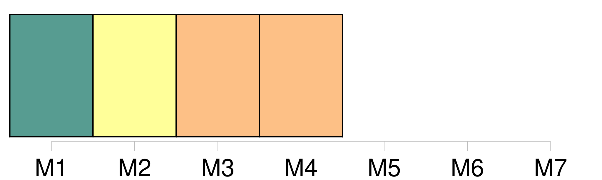

Longueur nb maillons : 4 mentions |
  |
Les informations visées au paragraphe 1 sont constituées par toute information disponible sous forme écrite, visuelle, sonore ou contenue dans des banques de [données] concernant l'état de la zone maritime et les activités ou les mesures les affectant ou susceptibles de les affecter, ainsi que les activités conduites ou les mesures adoptées conformément à la convention. [1 phrases]
Les dispositions du présent article n'affectent pas le droit qu'ont les parties contractantes, conformément à leur législation nationale et aux réglementations internationales applicables, d'opposer un refus à une demande d'information lorsque celle -ci a trait : |
La ressource peut être téléchargée sur la page Ortolang
Si vous avez des questions ou vous voyez des erreurs, merci d'envoyer un mail à silvia.federzoni89@gmail.com
Site développé par S. Federzoni (contact)